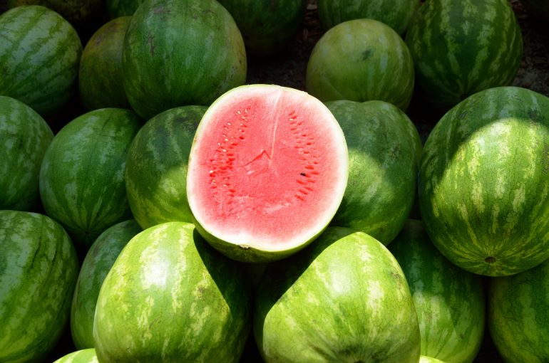

A melancia fica em segundo lugar, por ser suculenta e muito apetitosa.

E agora vamos aos fatos!
Tecnicamente, ela é uma fruta e um vegetal
Todas as partes da melancia sao comestíveis (casca, sementes, polpa)
Acredita-se que os antigos egípcios foram a primeira nação a produzir melancias em grande escala, principalmente as usando como fontes de água durante períodos de seca.